How to Read Candlestick charts?
Candlestick Patterns
How to Read Candlestick charts?
Candlestick charts were originated in Japan over 100 years before the West had developed the bar charts and point-and-figure charts. In the 1700s, a Japanese man known as Homma discovered that as there was a link between price and the supply and demand of rice, the markets also were strongly influenced by the emotions of traders.
A daily candlestick charts shows the security’s open, high, low, and close price for the day. The candlestick’s wide or rectangle part is called the “real body” which shows the link between opening and closing prices.
This real body shows the price range between the open and close of that day’s trading.
When the real body is filled, black or red then it means that the close is lower than the open and is known as the bearish candle. It shows that the prices opened, the bears pushed the prices down and closed lower than the opening price.
If the real body is empty, white or green then it means that the close was higher than the open known as the bullish candle. It shows that the prices opened, the bulls pushed the prices up and closed higher than the opening price.
The thin vertical lines above and below the real body is knowns as the wicks or shadows which represents the high and low prices of the trading session.
The upper shadow shows the high price and lower shadow shows the low prices reached during the trading session.
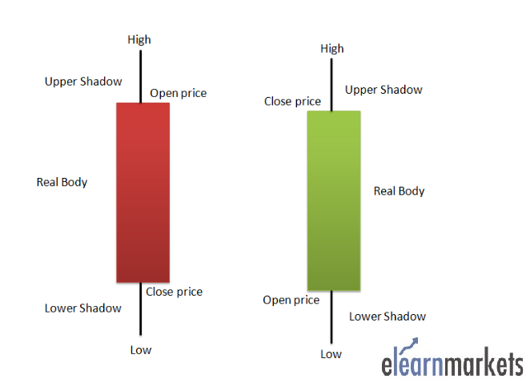

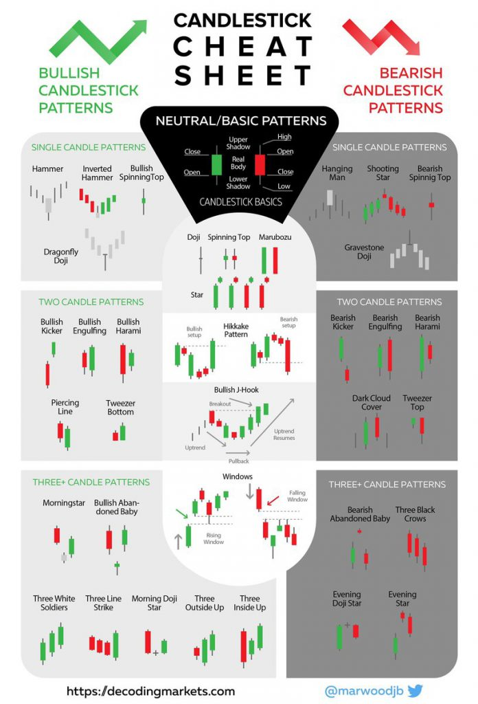
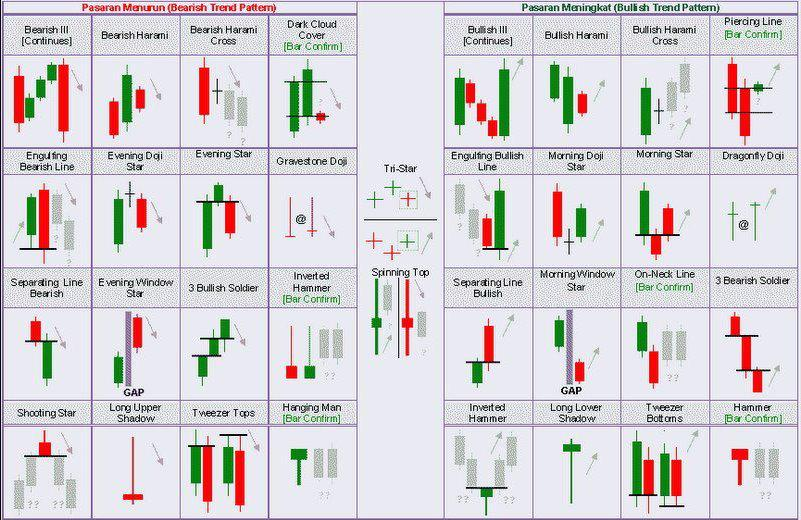
Bullish Reversal Candlestick Patterns
Bullish Reversal candlestick patterns indicate that the ongoing downtrend is going to reverse to an uptrend.
Thus, the traders should be cautious about their short positions when the bullish reversal candlestick chart patterns are formed.
Below are the different types of bullish reversal candlestick patterns:
Hammer
Hammer is a single candlestick pattern that is formed at the end of a downtrend and signals bullish reversal.
The real body of this candle is small and is located at the top with a lower shadow which should be more than twice the real body. This candlestick chart pattern has no or little upper shadow.
The psychology behind this candle formation is that the prices opened and sellers pushed down the prices.
Suddenly the buyers came into the market and pushed the prices up and closed the trading session more than the opening price.

This resulted in the formation of bullish pattern and signifies that buyers are back in the market and downtrend may end.
Traders can enter a long position if next day a bullish candle is formed and can place a stop-loss at the low of Hammer.
Below is an example of Hammer candlestick pattern:

Piercing Pattern
Piercing pattern is multiple candlestick chart pattern that is formed after a downtrend indicating a bullish reversal.
It is formed by two candles, the first candle being a bearish candle which indicates the continuation of the downtrend.
The second candle is a bullish candle which opens gap down but closes more than 50% of the real body of the previous candle which shows that the bulls are back in the market and a bullish reversal is going to take place.
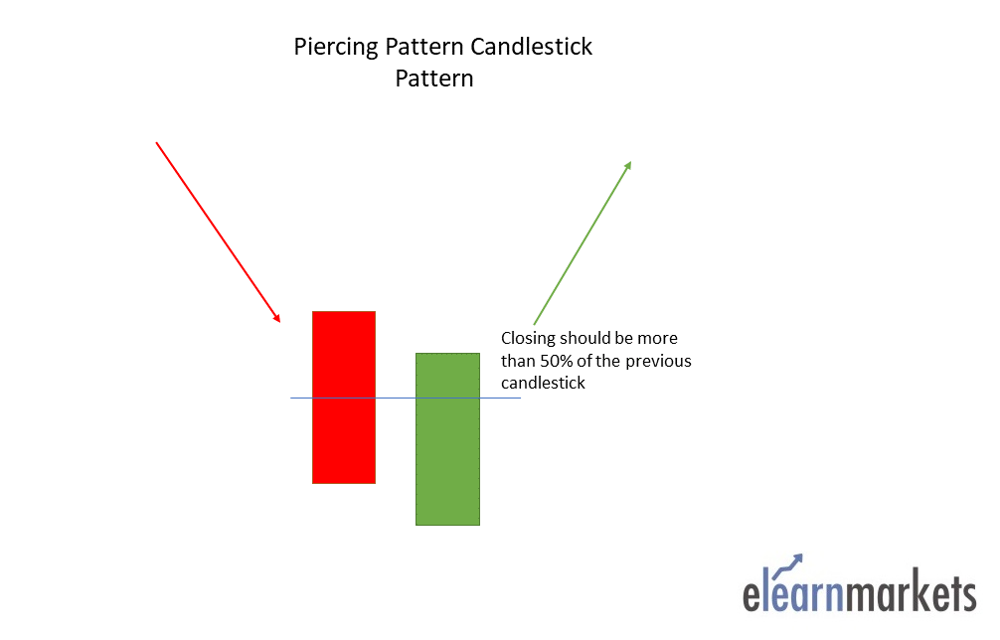
Traders can enter a long position if the next day a bullish candle is formed and can place a stop-loss at the low of the second candle.
Below is an example of a Piercing Candlestick Pattern:
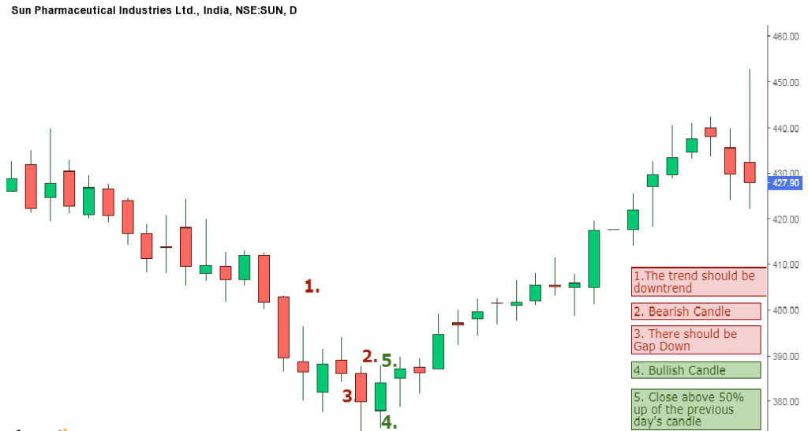
Bullish Engulfing
Bullish Engulfing is a multiple candlestick chart pattern that is formed after a downtrend indicating a bullish reversal.
It is formed by two candles, the second candlestick engulfing the first candlestick. The first candle is a bearish candle that indicates the continuation of the downtrend.
The second candlestick is a long bullish candle that completely engulfs the first candle and shows that the bulls are back in the market.

Traders can enter a long position if next day a bullish candle is formed and can place a stop-loss at the low of the second candle.
Below is an example of Bullish Engulfing Candlestick Pattern:

The Morning Star
The Morning Star is multiple candlestick charts pattern which is formed after a downtrend indicating bullish reversal.
It is made of 3 candlesticks, first being a bearish candle, second a Doji and the third being a bullish candle.
The first candle shows the continuation of the downtrend, the second candle being a doji indicates indecision in the market, and the third bullish candle shows that the bulls are back in the market and reversal is going to take place.
The second candle should be completely out of the real bodies of the first and third candles.
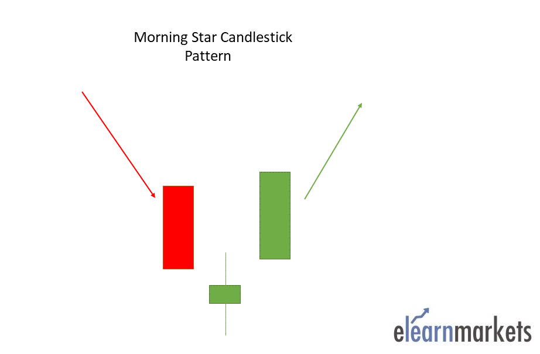
Traders can enter a long position if the next day a bullish candle is formed and can place a stop-loss at the low of the second candle.
Below is an example of Morning Star Candlestick Charts Pattern:
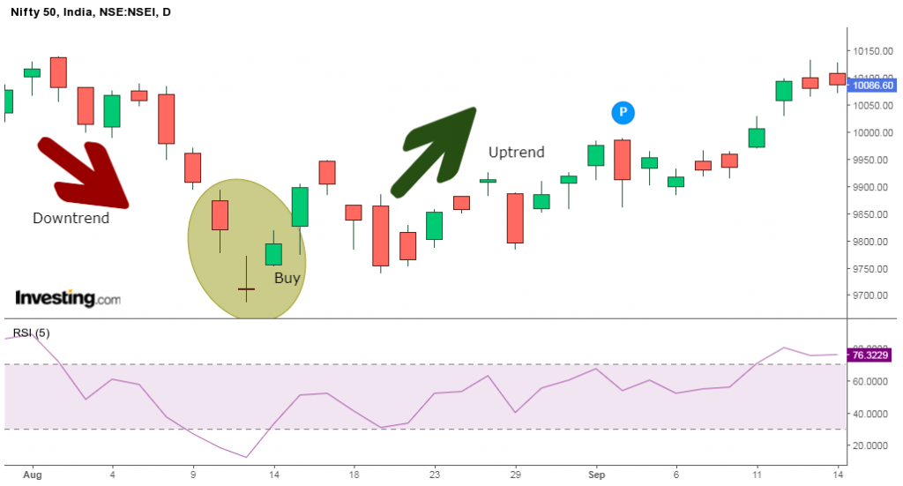
Three White Soldiers:
The Three White Soldiers is a multiple candlestick pattern that is formed after a downtrend indicating a bullish reversal.
These candlestick charts are made of three long bullish bodies which do not have long shadows and are open within the real body of the previous candle in the pattern.
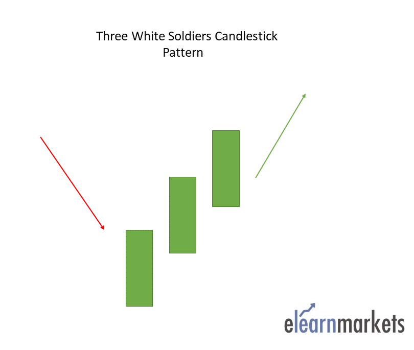
White Marubozu
The White Marubozu is a single candlestick pattern that is formed after a downtrend indicating a bullish reversal.
This candlestick has a long bullish body with no upper or lower shadows which shows that the bulls are exerting buying pressure and the markets may turn bullish.

At the formation of this candle, the sellers should be caution and close their shorting position.
Three Inside Up:
The Three Inside Up is multiple candlestick pattern which is formed after a downtrend indicating bullish reversal.
It consists of three candlesticks, the first being a long bearish candle, the second candlestick being a small bullish candle which should be in the range the first candlestick.
The third candlestick should be a long bullish candlestick confirming the bullish reversal.
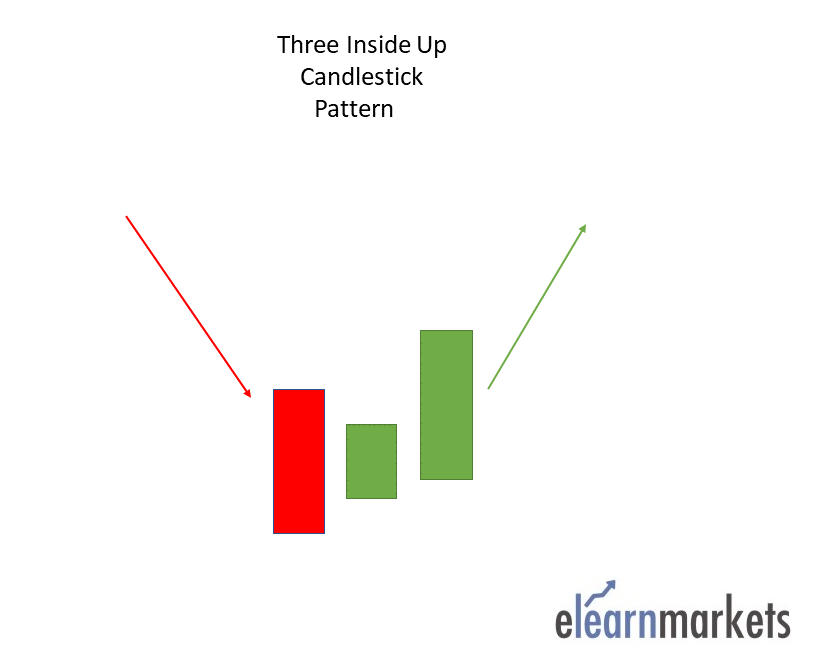
The relationship of the first and second candlestick should be of the bullish harami candlestick pattern.
Traders can take a long position after the completion of this candlestick pattern.
Bullish Harami:
The Bullish Harami is multiple candlestick chart pattern which is formed after a downtrend indicating bullish reversal.
It consists of two candlestick charts, the first candlestick being a tall bearish candle and second being a small bullish candle which should be in the range of the first candlestick.
The first bearish candle shows the continuation of the bearish trend and the second candle shows that the bulls are back in the market.
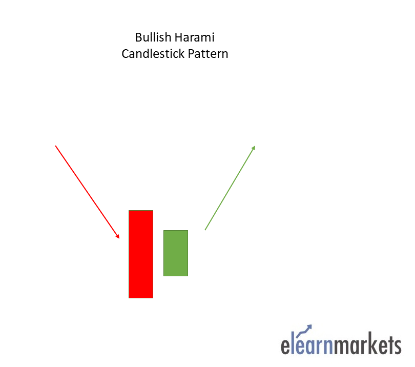
Traders can take a long position after the completion of this candlestick pattern.
Tweezer Bottom
The Tweezer Bottom candlestick pattern is a bullish reversal candlestick pattern that is formed at the end of the downtrend.
It consists of two candlesticks, the first one being bearish and the second one being bullish candlestick.
Both the candlesticks make almost or the same low.When the Tweezer Bottom candlestick pattern is formed the prior trend is a downtrend.
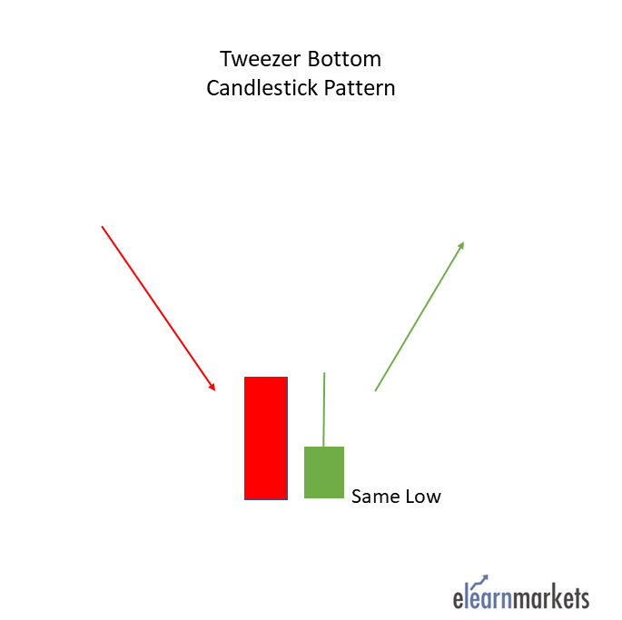
A bearish tweezer candlestick is formed which looks like the continuation of the ongoing downtrend. On the next day, the second day’s bullish candle’s low indicates a support level.
The bottom-most candles with almost the same low indicate the strength of the support and also signal that the downtrend may get reversed to form an uptrend. Due to this the bulls step into action and move the price upwards.
This bullish reversal is confirmed the next day when the bullish candle is formed.
Inverted Hammer:
An Inverted Hammer is formed at the end of the downtrend and gives a bullish reversal signal.
In this candlestick, the real body is located at the end and there is a long upper shadow. It is the inverse of the Hammer Candlestick pattern.
This pattern is formed when the opening and closing prices are near to each other and the upper shadow should be more than twice the real body.

Three Outside Up:
The Three Outside Up is multiple candlestick pattern which is formed after a downtrend indicating bullish reversal.
It consists of three candlesticks, the first being a short bearish candle, the second candlestick being a large bullish candle which should cover the first candlestick.
The third candlestick should be a long bullish candlestick confirming the bullish reversal.

The relationship of the first and second candlestick chart should be of the Bullish Engulfing candlestick pattern.
Traders can take a long position after the completion of this candlestick pattern.
On-Neck Pattern
The on neck pattern occurs after a downtrend when a long real bodied bearish candle is followed by a smaller real bodied bullish candle which gaps down on the open but then closes near the prior candle’s close.
The pattern is called a neckline because the two closing prices are the same or almost the same across the two candles, forming a horizontal neckline.
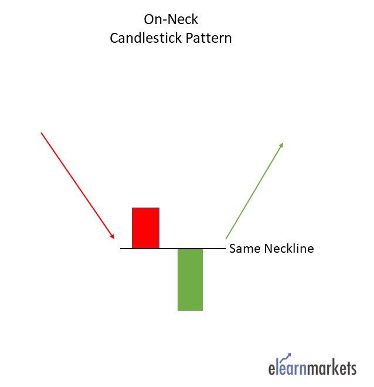
Bullish Counterattack
The bullish counterattack pattern is a bullish reversal pattern that predicts the upcoming reversal of the current downtrend in the market. This candlestick pattern is a two-bar pattern that appears during a downtrend in the market. A pattern needs to meet the following conditions to be a bullish counterattack pattern.
- There must be a strong downtrend in the market for the formation of the bullish counterattack pattern.
- The first candle must be a long black candle with a real body.
- The second candle must also be a long (ideally, equal in size to the first candle) but a white candle with a real body. The second candle must close near the close of the first candle.
Bearish Candlestick Pattern
Bearish Reversal candlestick patterns indicate that the ongoing uptrend is going to reverse to a downtrend.
Thus, the traders should be cautious about their long positions when the bearish reversal candlestick patterns are formed.
Below are the different types of bearish reversal candlestick chart patterns:
Hanging man
Hanging Man is a single candlestick pattern which is formed at the end of an uptrend and signals bearish reversal.
The real body of this candle is small and is located at the top with a lower shadow which should be more than the twice of the real body. This candlestick pattern has no or little upper shadow.
The psychology behind this candle formation is that the prices opened and seller pushed down the prices.
Suddenly the buyers came into the market and pushed the prices up but were unsuccessful in doing so as the prices closed below the opening price.
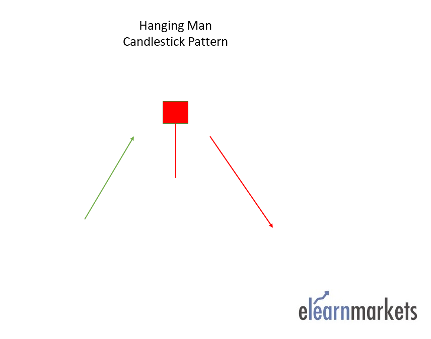
This resulted in the formation of bearish pattern and signifies that seller are back in the market and uptrend may end.
Traders can enter a short position if next day a bearish candle is formed and can place a stop-loss at the high of Hanging Man.
Below is an example of Hanging Man Candlestick Pattern:
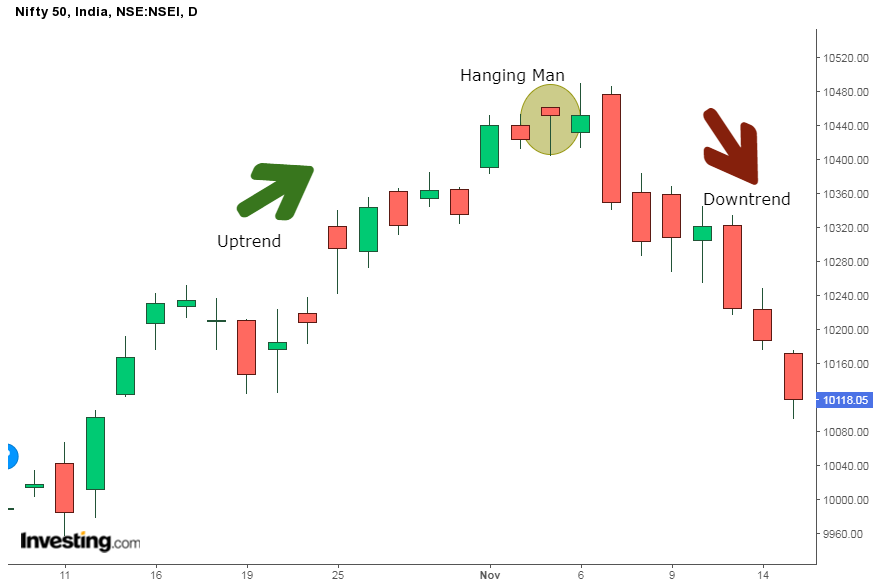
Dark cloud cover
Dark Cloud Cover is multiple candlestick pattern which is formed after the uptrend indicating bearish reversal.
It is formed by two candles, the first candle being a bullish candle which indicates the continuation of the uptrend.
The second candle is a bearish candle which opens gap up but closes more than 50% of the real body of the previous candle which shows that the bears are back in the market and bearish reversal is going to take place.
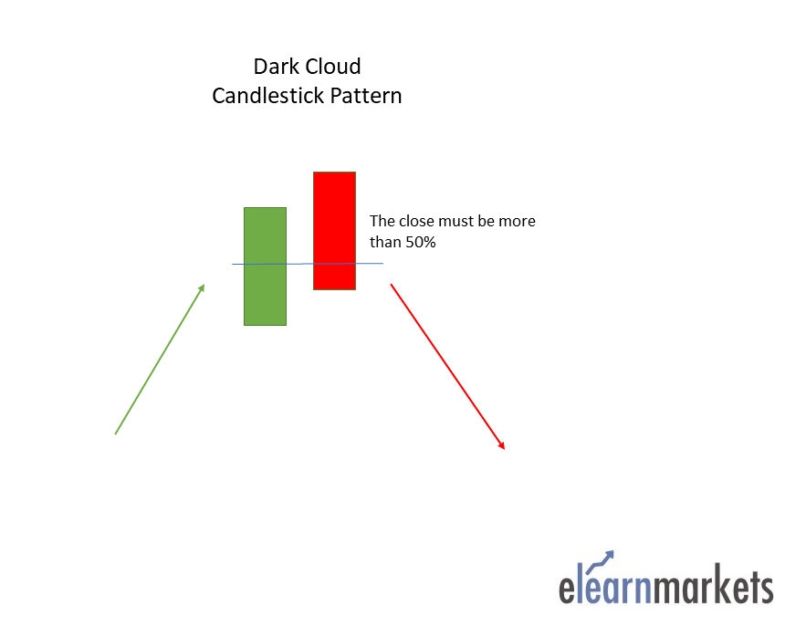
Traders can enter a short position if the next day a bearish candle is formed and can place a stop-loss at the high of the second candle.
Below is an example of a Dark Cloud candlestick pattern:;

Bearish Engulfing
Bearish Engulfing is a multiple candlestick pattern that is formed after an uptrend indicating a bearish reversal.
It is formed by two candles, the second candlestick engulfing the first candlestick. The first candle being a bullish candle indicates the continuation of the uptrend.
The second candlestick chart is a long bearish candle that completely engulfs the first candle and shows that the bears are back in the market.
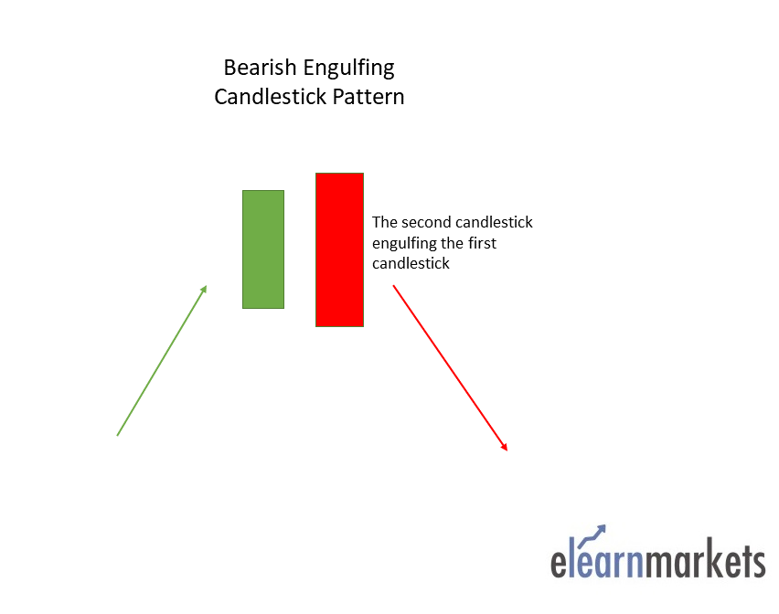
Traders can enter a short position if next day a bearish candle is formed and can place a stop-loss at the high of the second candle.
The Evening Star
The Evening Star is multiple candlestick pattern which is formed after the uptrend indicating bearish reversal.
It is made of 3 candlesticks, first being a bullish candle, second a doji and third being a bearish candle.
The first candle shows the continuation of the uptrend, the second candle being a doji indicates indecision in the market, and the third bearish candle shows that the bears are back in the market and reversal is going to take place.
The second candle should be completely out of the real bodies of first and third candle.

Traders can enter a long position if next day a bearish candle is formed and can place a stop-loss at the high of the second candle.
Below is an example of Evening Star Candlestick Pattern:
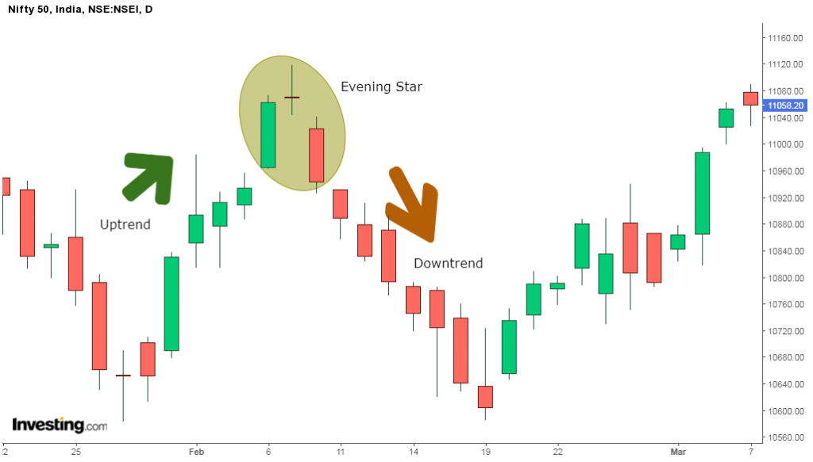
Three Black Crows
The Three Black Crows is multiple candlestick pattern which is formed after an uptrend indicating bearish reversal.
These candlesticks are made of three long bearish bodies which do not have long shadows and open within the real body of the previous candle in the pattern.

Black Marubozu
The Black Marubozu is a single candlestick pattern which is formed after an uptrend indicating bearish reversal.
This candlestick chart has a long bearish body with no upper or lower shadows which shows that the bears are exerting selling pressure and the markets may turn bearish.
At the formation of this candle, the buyers should be caution and close their buying position.
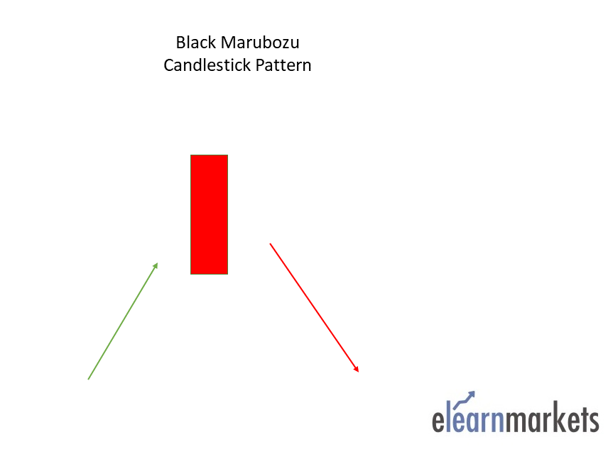
Three Inside Down
The Three Inside Down is multiple candlestick pattern which is formed after an uptrend indicating bearish reversal.
It consists of three candlesticks, the first being a long bullish candle, the second candlestick being a small bearish which should be in the range the first candlestick.
The third candlestick chart should be a long bearish candlestick confirming the bearish reversal.
The relationship of the first and second candlestick should be of the bearish Harami candlestick pattern.
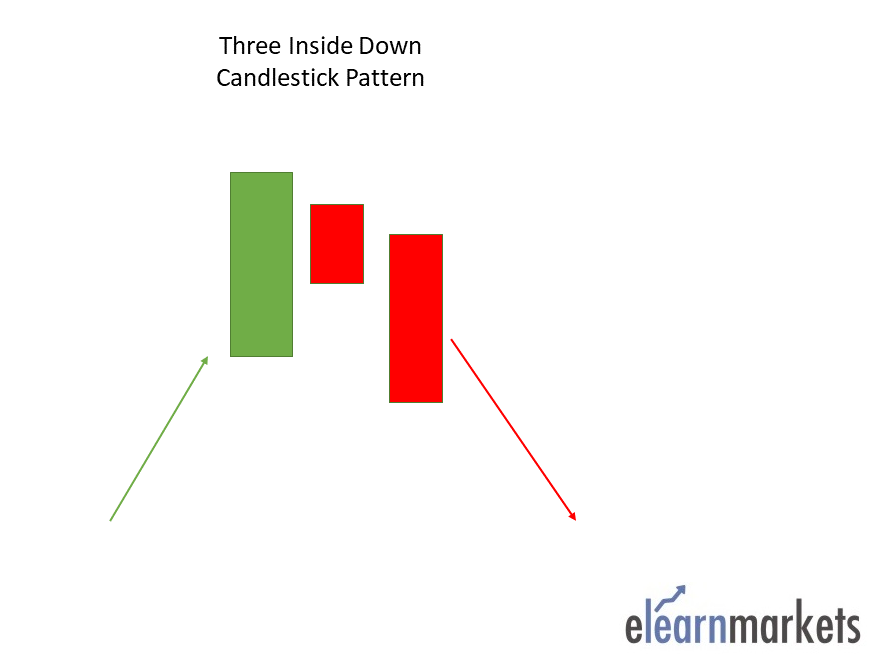
Traders can take a short position after the completion of this candlestick pattern.
Bearish Harami
The Bearish Harami is multiple candlestick pattern which is formed after the uptrend indicating bearish reversal.
It consists of two candlesticks, the first candlestick being a tall bullish candle and second being a small bearish candle which should be in the range of the first candlestick chart.
The first bullish candle shows the continuation of the bullish trend and the second candle shows that the bears are back in the market.

Traders can take a short position after the completion of this candlestick pattern.
Shooting Star
Shooting Star is formed at the end of the uptrend and gives bearish reversal signal.
In this candlestick chart the real body is located at the end and there is long upper shadow. It is the inverse of the Hanging Man Candlestick pattern.

This pattern is formed when the opening and closing prices are near to each other and the upper shadow should be more than the twice of the real body.
Tweezer Top
The Tweezer Top pattern is a bearish reversal candlestick pattern that is formed at the end of an uptrend.
It consists of two candlesticks, the first one being bullish and the second one being bearish candlestick. Both the tweezer candlestick make almost or the same high.
When the Tweezer Top candlestick pattern is formed the prior trend is an uptrend. A bullish candlestick is formed which looks like the continuation of the ongoing uptrend.
On the next day, the high of the second day’s bearish candle’s high indicates a resistance level. Bulls seem to raise the price upward, but now they are not willing to buy at higher prices.
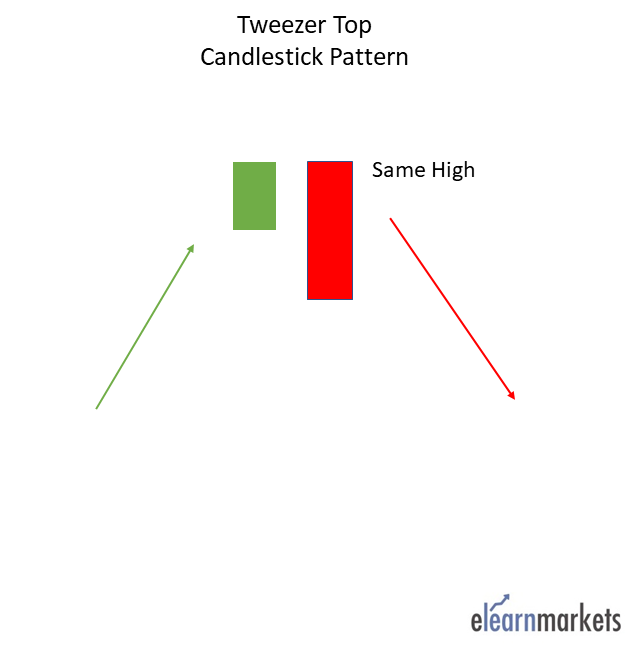
The top-most candles with almost the same high indicate the strength of the resistance and also signal that the uptrend may get reversed to form a downtrend. This bearish reversal is confirmed on the next day when the bearish candle is formed.
Three Outside Down
The Three Outside Down is multiple candlestick pattern which is formed after an uptrend indicating bearish reversal.
It consists of three candlesticks, the first being a short bullish candle, the second candlestick being a large bearish candle which should cover the first candlestick.
The third candlestick should be a long bearish candlestick confirming the bearish reversal.
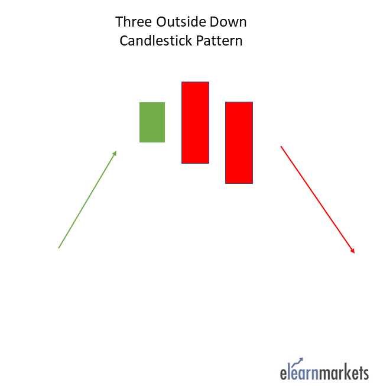
The relationship of the first and second candlestick should be of the Bearish Engulfing candlestick pattern.
Traders can take a short position after the completion of this candlestick pattern.
Bearish Counterattack
The bearish counterattack candlestick pattern is a bearish reversal pattern that appears during an uptrend in the market. It predicts that the current uptrend in the market will make and the new downtrend will take over the market.
Continuation Candlestick Patterns
Doji
Doji pattern is a candlestick pattern of indecision which is formed when the opening and closing prices are almost equal.
It is formed when both the bulls and bears are fighting to control prices but nobody succeeds in gaining full control of the prices.
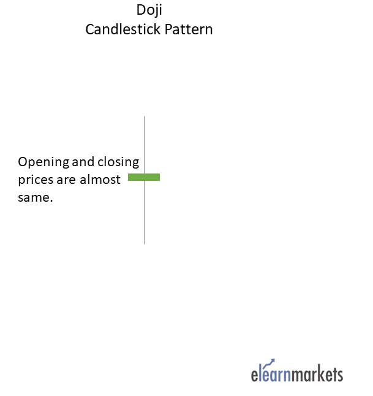
The candlestick pattern looks like a cross with very small real body and long shadows.\
Spinning Top
The spinning top candlestick pattern is same as the Doji indicating indecision in the market.
The only difference between spinning top and doji is in their formation, the real body of the spinning is larger as compared to Doji.

Falling Three Methods
The “falling three methods” is a bearish, five candle continuation pattern which signals an interruption, but not a reversal, of the ongoing downtrend.
The candlestick pattern is made of two long candlestick charts in the direction of the trend i.e downtrend at the beginning and end, with three shorter counter-trend candlesticks in the middle.
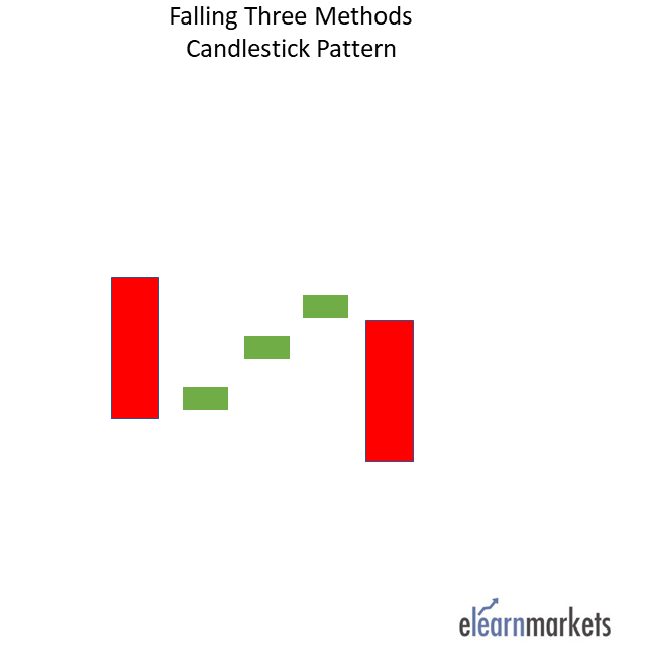
The candlestick pattern is important as it shows traders that the bulls still do not have enough power to reverse the trend.
Rising Three Methods
The “rising three methods” is a bullish, five candle continuation pattern which signals an interruption, but not a reversal, of the ongoing uptrend.
The candlestick pattern is made of two long candlesticks in the direction of the trend i.e uptrend in this case. at the beginning and end, with three shorter counter-trend candlesticks in the middle.
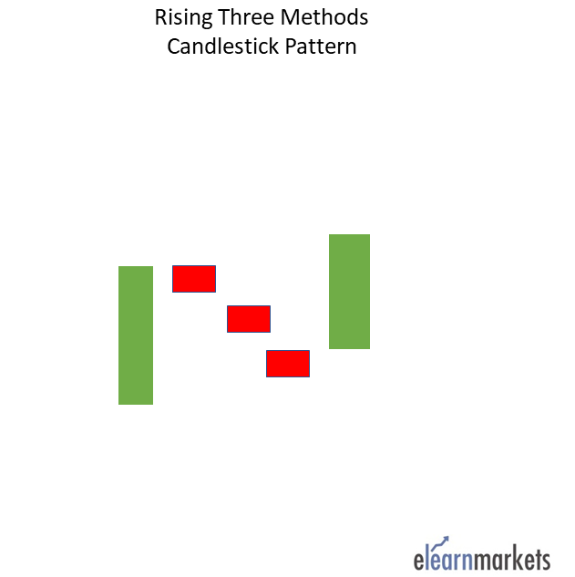
The candlestick pattern is important as it shows traders that the bears still do not have enough power to reverse the trend.
Upside Tasuki Gap
It is a bullish continuation candlestick pattern which is formed in an ongoing uptrend.
This candlestick pattern consists of three candles, the first candlestick is a long-bodied bullish candlestick, and the second candlestick is also a bullish candlestick chart formed after a gap up.
The third candlestick is a bearish candle that closes in the gap formed between these first two bullish candles.

Downside Tasuki Gap
It is a bearish continuation candlestick pattern which is formed in an ongoing downtrend.
This candlestick pattern consists of three candles, the first candlestick is a long-bodied bearish candlestick, and the second candlestick is also a bearish candlestick formed after a gap down.
The third candlestick is a bullish candle that closes in the gap formed between these first two bearish candles.
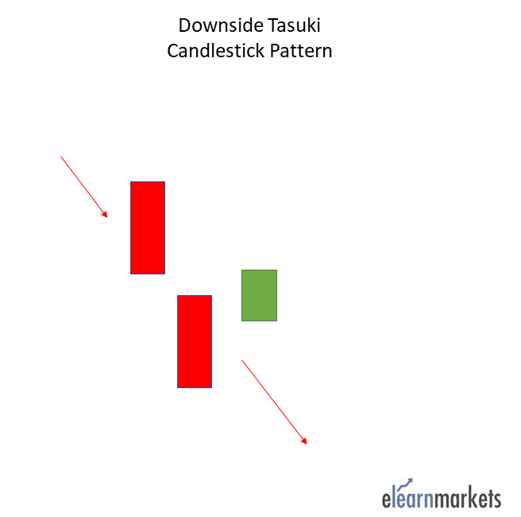
Mat-Hold-
A mat hold pattern is a candlestick formation indicating the continuation of a prior trend.
There can be either bearish or bullish mat hold patterns. A bullish pattern begins with a large bullish candle followed by a gap higher and three smaller candles which move lower.